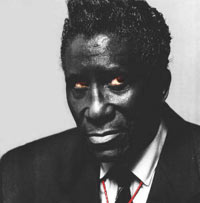

Хокинс записал "Monkberry Moon Delight" - песню МакКартни, как будто специально на него рассчитанную. Но в раскрутку никто не хотел вкладываться, "Филипс" не продлил контракт. Отсутствие удачи преследовало Хокинса до 1976г., пока не обернулось несчастьем. Не вовремя взорвавшаяся петарда почти ослепила его, и ему надолго пришлось прекратить гастроли. В 1978г. у него был отличный шанс вернуть внимание публики благодаря участию в фильме "Американский горячий винилл"("American Hot Wax"), но при окончательном монтаже опять обкорнали сцены с его участием. Новая диско-версия "На тебе мое заклятье" уже не смогла очаровать публику. В конце концов, он стал сниматься в японской рекламе "уок-мэнов". (Что может быть горше? Первый-последний советский президент в рекламе пиццы!)  Но Хокинс не сковырнулся на шоубизнесовых кочках, не из такого он сделан вещества. Естественно-колоритный персонаж, он появился в кино. Для Джима Джармуша с его полупатологической зависимостью от Тома Уэйтса, было совершенно естественно пригласить Хокинса: "Гон-Конг" Хокинса и "Сингапур" Уэйтса - птички с одного насеста, хоть и пометов разных десятилетий. Но потом Хокинс появился и в коммерческо-эротическом "Пересечении двух лун" ("Two Moon Junction") - правда, не в главной роли, но все-таки…Альбом 1991 года, собранный фирмой "Rhino" не только носил шикарное название: "Черная музыка для белых людей" ("Black Music for White People"), но и был значительной коммерческой удачей, особенно в сравнении с прозябанием предыдущих двух десятилетий. В том же году Хокинс записал новый альбом в Австралии: "Я грожу тебе палкой" ("I Shake My Stick At You"). На нем - две песни Тома Уэйтса. Звукозаписывающие фирмы прикрепляли к Хокинсу продюсера, задачей которого было более-менее воспроизвести стиль, сделавший Хокинса легендарным артистом. Это ограничивало творческие возможности и обрекало на бесконечный самоповтор. А он органически не мог сыграть второй дубль с истинным азартом. В результате эти поздние работы, конечно, не могут равняться с древними по зажигательности. Но этот же продюсерский подход дал возможность записать несколько мастерских ритмэндблюзовых альбомов в 90-х, когда уж само определение "ритм-энд-блюз" утратило свой изначальный смысл. Ну а юморок, конечно, все тот же. В альбоме "Полный псих" ("Stone Crazy", 1993) Хокинс демонстрирует свой обычный клубный репертуар. Конферанс: "Мадам, одерните платье, я не могу сконцентрироваться. Нет, человеческое тело меня не смущает, при всех его недостатках, но лично вам мохнатые ноги лучше брить хоть иногда." Песня: "Джек помог Джил поднять ношу в гору, Джил помогла Джеку спустить". (В оригинале каламбур на тему "Jack off"). В разгар американской моды на "выбирайте выражение", Хокинс становится чемпионом политнекорректности. Эти шуточки вкупе со своеобразием его музыкального языка наводят на мысль, что место Хокинса в поп-культуре - где-то на пути от Бивис'N'Батхеда к Тому Уэйтсу. Да, он из тех, кто понижал планку общественных приличий, но все-таки он шел не к подростковому кретинизму… Он был не только эксцентрик, но и поэт; не только крикун, но и певец. И шел он против общего эстрадного потока, а не туда, где путь утоптан. В престижной парижской "Олимпии" в мае 1998г. Хокинс записал концерт, опубликованный в конце 1999г. Он успел побузить напоследок студийным альбомом "Наконец" ("At Last", 1998), успел оставить свидетельство, что его не перевоспитаешь… Последний его альбом открывает песня "Хотел бы, мог бы, должен бы…" ("Coulda', Woulda', Shoulda'"). Причина смерти - осложнения после операции по поводу кишечной закупорки. Он умер в клинике в пригороде Парижа. Он кремирован. Единственный город, о котором он спел с любовью; смешная публике болезнь, которую он воспел; и горящий гроб, в который он ложился почти полвека - все сошлось в финальной точке. ХОКИНС: Как я всегда хотел петь в опере. Эта мечта ведь тоже восходит к детским воспоминаниям о Поле Робсоне. Но, едва я стал профессиональным певцом, мне объяснили, что опера не попадает в хит-парады. Тогда на пластинках выпускали только ритм-энд-блюзы. Но ведь у меня есть голос, так почему же люди не воспринимают меня просто как певца, без этих выкрутасов? Основа моей музыки - это Рой Милтон, Вайнон Хэррис, Рой Браун, Клинхэд Винсон, Луи Джордан… Люди не слушают меня как певца - я могу быть для них только каким-то монстром. Я не хочу быть черным Винсентом Прайсом! Я хочу петь эту чертову оперу! Я хочу петь Фигаро. Я хочу исполнить "Аве Мариа"... PS. Билл Уаймэн, один из немногих, кто благополучно спрыгнул с безумного поезда, записал в последнем своем альбоме еще одну версию "…Заклятья"… Лирическую - может быть, такую, как ее сочинял Скриминг Джей: всего лишь грустную эстрадную балладу…
design by sahua |